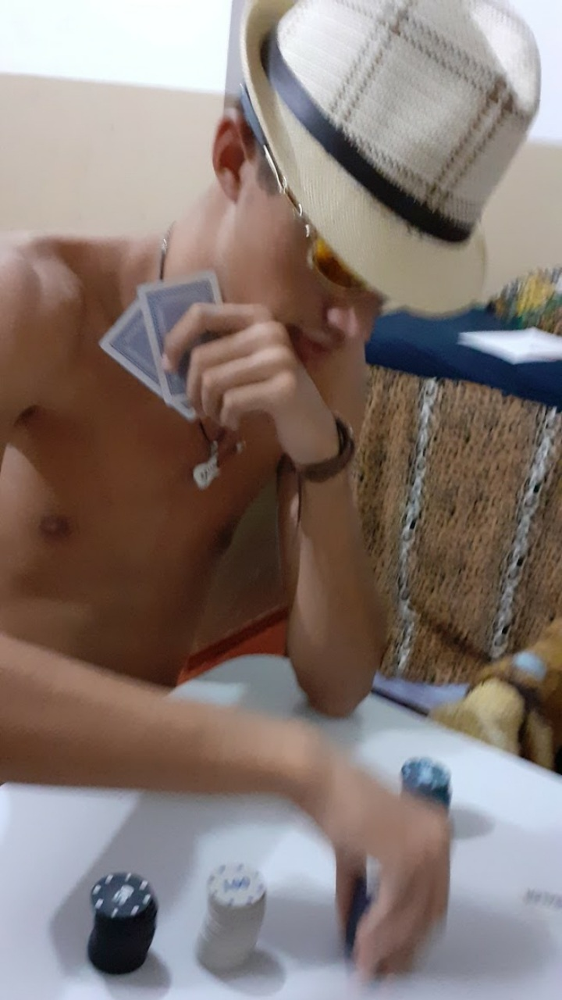
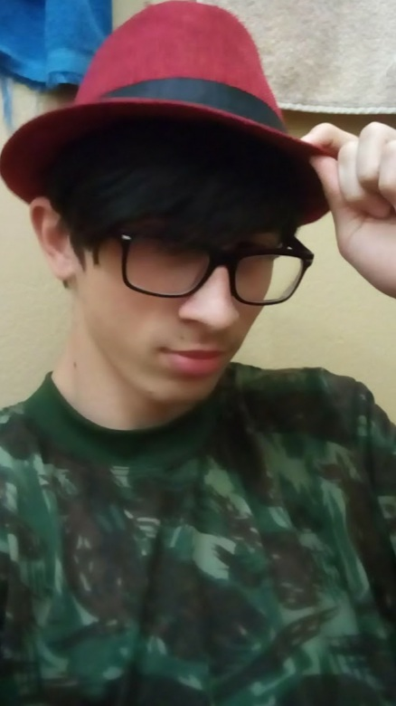
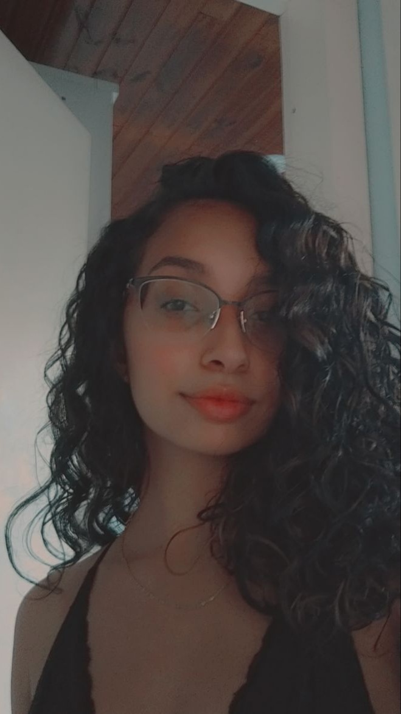

Gláuber Barbacovi Ribeiro
16 anos
Nascido 03/04/2004Mora atualmente em Campinas do Sul - RS
Estado civil: Solteiro
estudos
Cursa atualmente o Segundo ano do TMSI - IFRS - Campus Sertão.
Certificado no Programa deIniciação Científica.

Breno Disner
17 anos
Nascido 31/03/2003Mora atualmente em Erechim - RS
Estado civil: Solteiroestudos
Entusiasta no front-endCursa atualmente o Segundo ano do TMSI - IFRS - Campus Sertão.
Menção honrosa obmep
Certificado curso básico de HTML
Cursou 2 anos de inglês
Isabel Maria da Rosa
17 anos
Nascida 13/10/2003Mora atualmente em Passo Fundo - RS
Estado civil: Solteira
estudos
Cursando atualmente o Segundo ano do TMSI - IFRS - Campus Sertão.
Certificado em Língua Inglesa.
Certificado em Informática.